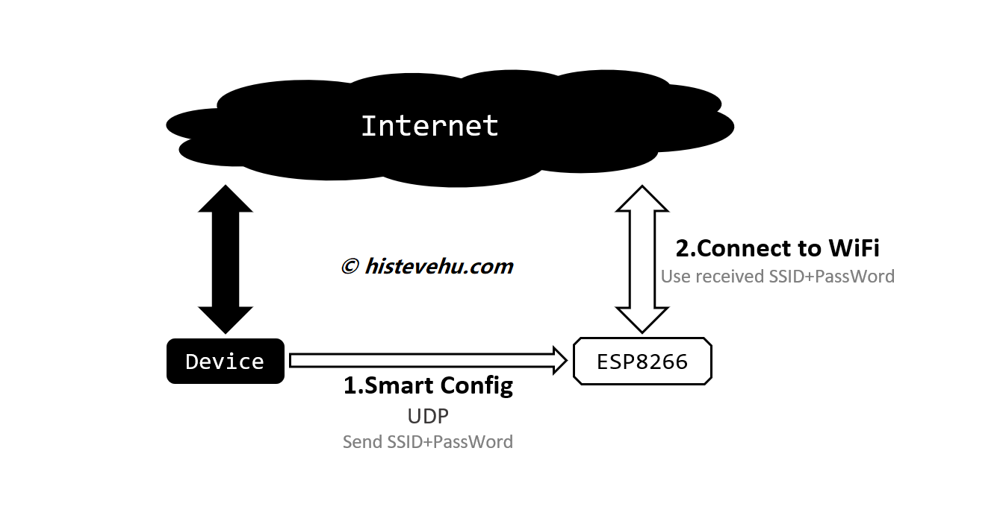
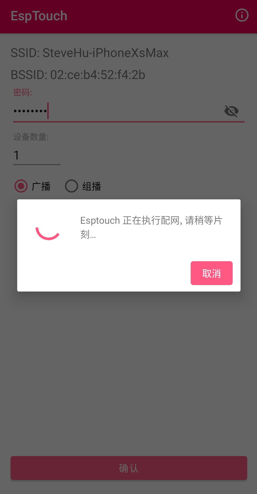

在之前的教程中，我们已经学习了ESP8266的基本信息及开发环境搭建。在这里我们将学习如何 通过SmartConfig配网 将ESP8266 以一种对用户更友好的方式接入互联网
前导教程
如果你第一次阅读本文且之前无相关经验，建议阅读以下前导教程后再开始着手开始此教程。
准备
ESPTouch
iOS
(注意截止到2019.11.16乐鑫尚未对iOS版本ESPTouch进行iOS13适配，可能存在问题，尚不推荐使用)
https://apps.apple.com/cn/app/espressif-esptouch-aka-a-m-x/id1071176700
Android
https://github.com/EspressifApp/EsptouchForAndroid/releases/download/v1.1.0/esptouch.apk
什么是 SmartConfig 配网
首先，我们先来看一下为什么设备需要配网呢？
想象一下，假如你购买了一个智能插座，想让它连接到家里的WiFi，但是智能插座又没有键盘和触摸屏此时你该怎么操作呢？对于我们而言，可以将家中的WiFi的SSID和密码写死到固件中并烧录，然而如果遇到WiFi的SSID或密码更改的情况，修改将会非常麻烦。而以上对于普通用户来说更是天方夜谭，用户体验极不友好。
我们想象中的优化目标：
SSID
自动获取用户移动端（手机、平板等）所连接的WiFi的名称
密码
鉴于多数WiFi密码长度尚可且为了安全性，这是用户需要且仅需要的一项内容
此时就需要我们的智能配网模式。SmartConfig最先是TI开始研究的，其实类似的协议有很多，只是不同厂家间名称不同，乐鑫智能配网模式的名称仍为 SmartConfig
下面一张图来概括什么是SmartConfig及其原理和作用

开始
1.打开Arduino,添加一下代码并烧录至ESP8266：
1 |
|
- 确认移动端已经连接到2.4Ghz WiFi（因为ESP8266 仅支持2.4Ghz WiFi，若移动端连接到5Ghz 或其他频率WiFi则配网会失败）
- 打开移动端ESPTouch，输入密码并确认，移动端开始广播WiFi信息，开始配网。

3.打开Arduino串口监视器（点击主界面右上角放大镜图标），重启ESP8266。稍等片刻，可见ESP8266向串口输出WiFi的SSID和密码消息，证明配网成功